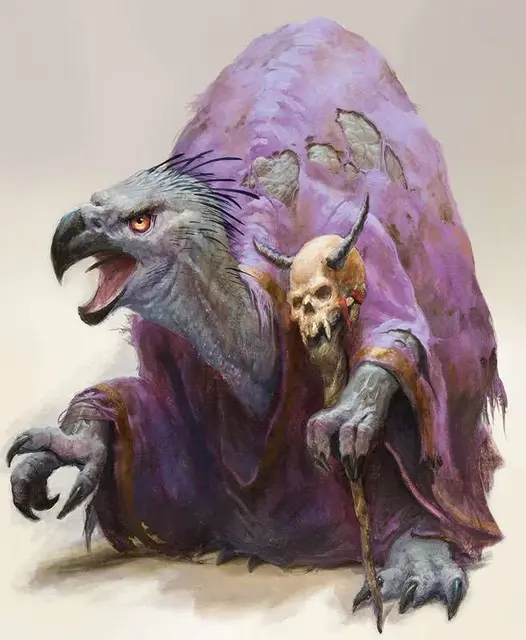

Нагпа
Nagpa
Средний Гуманоид (Нагпа), нейтрально-злой

Класс Доспеха 19 (природный доспех)
Хиты 187 (34к8 + 34)
Скорость 30 футов
| мод | спас | ||
|---|---|---|---|
| СИЛ | 9 | −1 | −1 |
| ЛОВ | 15 | +2 | +2 |
| ТЕЛ | 12 | +1 | +1 |
| мод | спас | ||
|---|---|---|---|
| ИНТ | 23 | +6 | +12 |
| МДР | 18 | +4 | +10 |
| ХАР | 21 | +5 | +11 |
Навыки Восприятие +10, История +12, Магия +12, Обман +11, Проницательность +10
Чувства истинное зрение 120 футов, пассивное Восприятие 20
Языки Общий
Опасность 17 (18000 опыта)
Бонус мастерства +6
Среда обитания Болото, Город, Лес, Побережье, Подземье, Пустыня
Особенности
Языки. Знает Общий плюс до 5 других языков
Развратить существо. Нагпа бонусным действием выбирает целью существо в пределах 30 футов своей видимости. Цель должна пройти спасбросок Харизмы Сл 20. Злые существа совершают спасбросок с помехой. В случае провала цель становится очарованной нагпа до начала следующего хода нагпа. В случае успеха цель становится невосприимчивым к этому эффекту на следующие 24 часа.
Паралич (перезарядка 6). Нагпа бонусным действием заставляет всех существ в пределах 30 футов от себя преуспеть в спасброске Мудрости Сл 20, или быть парализованным на 1 минуту. Парализованная цель может повторять спасбросок в конце каждого своего хода, завершая эффект в случае успеха.
Нежить и конструкты невосприимчивы к этому эффекту.
Использование заклинаний. Нагпа является заклинателем 15-го уровня. Его базовой характеристикой является Интеллект (Сл спасброска от заклинаний 20, +12 к попаданию атаками заклинаниями). У него подготовлены следующие заклинания волшебника:
• Заговоры (неограниченно): леденящее прикосновение [chill touch], огненный снаряд [fire bolt], волшебная рука [mage hand], сообщение [message], малая иллюзия [minor illusion]
• 1 уровень (4 ячейки): очарование личности [charm person], обнаружение магии [detect magic], защита от зла и добра [protection from evil and good], ведьмин снаряд [witch bolt]
• 2 уровень (3 ячейки): удержание личности [hold person], луч слабости [ray of enfeeblement], внушение [suggestion]
• 3 уровень (3 ячейки): контрзаклинание [counterspell], огненный шар [fireball], полёт [fly]
• 4 уровень (3 ячейки): смятение [confusion], мираж [hallucinatory terrain], огненная стена [wall of fire]
• 5 уровень (2 ячейки): подчинение личности [dominate person], вещий сон [dream], обет [geas]
• 6 уровень (1 ячейка): круг смерти [circle of death], распад [disintegrate]
• 7 уровень (1 ячейка): эфирность [etherealness], радужные брызги [prismatic spray]
• 8 уровень (1 ячейка): слабоумие [feeblemind]
Действия
Посох. Рукопашная атака оружием: +8 к атаке, досягаемость 5 фт., одна цель. Попадание: 9 (2к6 + 2) дробящего урона.
Описание
Давным-давно, Королева Воронов прокляла группу заговорщиков из тринадцати могущественных волшебников за вмешательство в ритуал, который помог бы предотвратить войну между богами. Она лишила их красоты, превратив в отвратительных птицеподобных чудовищ. Нагпы и сейчас строят новые заговоры, как и раньше, но теперь они стремятся принести в мир ужасные, всесотрясающие бедствия, чтобы вырвать силу и знания из руин, что останутся после всего.
Нагпы боятся Королеву Воронов и делают всё возможное для избегания её и её приспешников. Если же им кажется, что невозможно убежать, они становятся трусливыми, подлизывающими и угождающими перед теми, кто когда-то опустил их так низко.
Все изначальные 13 волшебников до сих пор живы, благодаря своей хитрости и готовности делать всё, что угодно ради своего выживания.
Мародёры цивилизации. Проклятье Королевы Воронов, что было наложено на нагпа, ограничивает им способы получения новых знаний и магической силы, запрещая получать новые источники силы, за исключением руин, оставленных за падшими цивилизациями и велики катаклизмами. Поэтому нагпа прилагают все усилия, чтобы добраться до этих мест в надежде отыскать новые знания в древних библиотеках, разграбить хранилища и собрать секреты магических знаний с остатков цивилизаций.
Кукловоды. Нагпа действуют в тени, управляя событиями, что приносят разрушение. Будучи умелыми пользователями магии, они могут пустить в ход ряд заклинаний, чтобы влиять на других представителей рас, воздействуя на их решения, и дёргать за ниточки, превращая их в невольных пособников, что посеют разрушение. У нагпа развито большое терпение в выполнении своих замыслов, а также они выполняют сразу одновременно несколько планов, каждая из которых на разной стадии выполнения, и поэтому, если с одним планом что-то идёт не так, они могут сконцентрироваться на другом. Обычно, нагпа появляются только тогда, когда их умысел почти выполнен, и они выходят из тени перед тем, как нанести заключительный удар, а затем они наслаждаются великим разрушением, которые принесли их замысли.